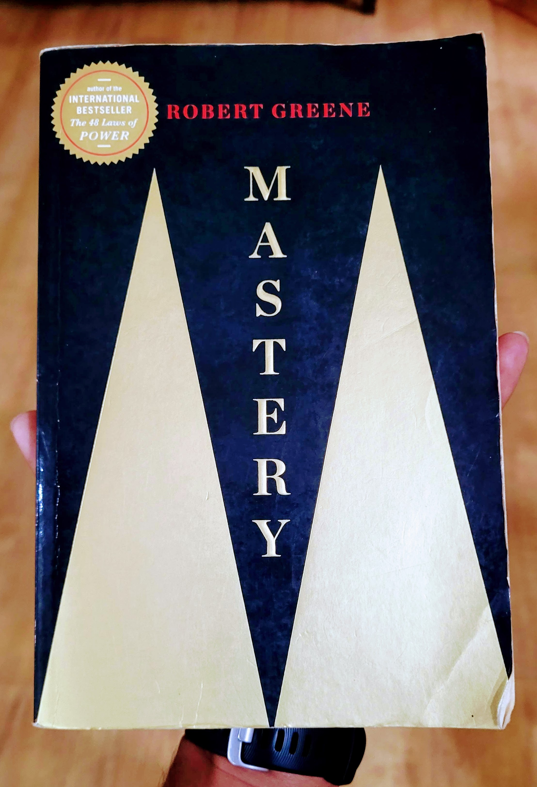

• In every work of genius recognise our own rejected thoughts; they come back to us with a certain alienated majesty.
• Da Vinci was haunted by a question: is there some kind of force from within that makes all living things grow and transform themselves ?
• Da Vici didn't care about finished product, it was search and process of creating something that inspired him.
• Da Vinci was mocked by Michaelangello for his sluggishness and failing to complete bronze horses but Da Vinci didn't mind.
• You take what you do for others and make it your own.
• Become who you are by learning who you are.
• For Einstein it was not physics but a fascination with invisible forces that governed the forces.
• Life's task can appear in the guise of deficiencies, making us focus on few small things we are good at.
• Strategies to find life's task-
1. Return to your origins- The primal inclination strategy
2. Occupy the perfect niche- The Darwianian strategy
3. Avoid the false path- The rebellion strategy
4. Let go of past- The adaptation strategy
5. Find your way back- The life-or-death strategy
• The goal of apprenticeship is transformation of mind and character.
• The Three Steps of Apprenticeship Phase-
1. Deep Observation- The Passive Mode
- Observe the rules and procedures that govern success in the new environment.
-Observe the power relationships within groups.
- Empty all preconceptions, theories before amassing enough knowledge.
- Observe first->base your ideas on observations->analyze what you find.
2. Skill Acquisition - The Practise Mode
- Leads to tactic knowledge - easy to show hard to explain.
- Apprentice learn by imitating Masters directly.
-Accept and embrace the tedium.
- When we learn new stuff, frontal cortex becomes larger with neurons, on repetition it flattens down freeing space.
- once actions become automatic, we have mental space to observe as we practise.
- Reach cycle of accelerated returns so that mind is totally absorbed in practise.
3. Experimentation - The Active Mode
-Open to criticism.
-Force yourself to initiate before you think you are ready.
4. Trust the process
-results come thorough rigorous training - physical and mental.
- Masters, filled with trust in the process, trudge on well past the point at which others slowdown or mentally quit.
-Frustuation is a sign of progress-a signal that your mind is processing complexity and requires more practice.
5. Move towards resistance and pain
-Become your worst critic and find weaknesses.
-Find perverse pleasure in moving past pain.
- Resist being nice to self and easing focus.
6. Apprentice yourself in failure
-Ford succeeded in his 3rd attempt to mass produce car. He didn't like money people meddling design.
7. Combine the "how" and the "what"
-Calatrava by overcoming how and what divide of architecture, gained a much deeper knowledge.
-This is why Renaissance and work of Da Vici facinate us.
8. Advance through trial and error
-Follow Hacker's approach to programming.
-Learn as many skills as possible, following the direction that circumstances lead you to, but only if they are related to your deepest interests.
-Wide ranging apprenticeships younger, will expand opportunities as we grow older.
Michael Faraday, apprenticed at a book store, struggled to be become an assistant of famous scientist Davy.
1. Choose a mentor according to needs of Life's task.
2. Gaze deep into mentor's mirror.
3. Transfigure their idea ~ don't simply copy but improvise.
4. Create a back and forth dynamic.
Edison was inspired and self mentored by books of Michael Faraday
IV
• The principle problem we face in social arena is our naïve tendency to project people into our emotional needs and desires of the moment.
• Franklin would completely focus on people, cutting of his insecurities and desires from equation.
• Franklin was cheated by his brother, governer, co workers.
• Social intelligence required, emotionless approach to people.
• The more you fathom about people's past and way of thinking, the more you can enter their spirits.
The 7 Deadly Realities
1. Envy:
- people won't admit envy even to themselves.
- people who become overly friendly in the first stages are often envious.
- avoid being too perfect.
- self depreciating humor will work.
2. Conformism:
- workplace as a kind of theater where you always wear a mask.
- let your work subtly demonstrate your individual spirit.
Strategies for acquiring social intelligence
1. Speak through your Work
- How Dr. Ignaz Semmelweis discovered importance of disinfection to prevent childbed fever, but didn't focus on social intelligence thus failed to get recognition.
- William Harvey discovered blood circulation and used social agility to gain acceptance.
- Work is means to express social intelligence.
2. Craft the appropriate persona
- like visual artist Teresita Fernandez.
- You never settle on one image or give people the power to completely figure you out.
-Persona is a key element of social intelligence.
3. See your self as others see you.
4. Suffer fools gladly.
Key points
- Masters retain their childhood spirit(question,visualise every thing) despite, pressures from adulthood. This spirt manifests into work and thinking.
- Dimensional mind creates instead of consuming.
Steps
1. The Creative Task
- The task you choose to work on must have an obsessive element.
- Tasks should be above your level - higher the goal, more energy from within.
2. Creative Strategies
A. Cultivate Negative Capability
- Let mind absorb itself in experiences without forming judgment.
-Suspend judging everything, entertain opposite view points, seek uncertainty, now come back to judge.
B. Allow for Serendipity
a) Widen search as far as.
Look more than generally required and tired your self
b) Maintain an openness and looseness of spirit.
- Pasteur accidentally discovered vaccination by focusing other subjects and freeing his mind.
- “Chance favours only the prepared mind.”- Louis.
- Edison discovered phonograph while trying to fix sound problem later on.
C. Alternate the mind through Current
- Current is a mental electric charge that gains power through alteration.
- Make prototypes and take public opinion like Fuller.
D. Alter your perspective
- By looking at how instead of what.
- Da Vinci spent hours on light hitting geometric objects,shadows and folds on a gown.
- Page and Brin focussed on trivial flaws in AltaVista- ranking searches on number of times of mentioning subjects in article and developed PageRank algo - no. of times the article has been linked to.
- Earlier, doctors considered diseases as from outside the body. But Hopkins reversed that perspective for scurvy. Play reversal of mind and emotions.
E. Revet to primal forms of intelligence
- Edison, Ford thought in 3D models.
3. Creative breakthrough- tension and insight
-Einstein gave up gave up 10 years of work, went to bed early but next morning he came up with solution.
-Emotional Pitfalls
a. Complacency: taking learned ideas for granted.
b. Conservatism: tether to convectional ideas.
c. Dependency: relying on masters.
d. Impatience:
Da Vinci used "obstinato rigore" ~ stubborn rigor as his Motto. Find pleasure in pain.
e. Grandiosity: dangers from praise or success. Falling to ego.
f. Inflexibility: we have to doubt but not loose optimism.
Strategies for creative active phase
2. Fact of great Yield :
-VS Ramachandran looked for any anomalies in neuralscience that could challenge conventional wisdom, he then had to explain in science and implications beyond his field.
- Instead of beginning with a broad goal, search for evidence that is strange.
3. Mechanical Intelligence:
- Wright brothers used to take apart stuff, explore, improvise.
- they thought of plane like a bicycle analogy rather than like ship what other thought, overemphasing on stability.
- they had no degree but built their own engine, blades based on their research.
- on Dec 17, 1903 first flight for 59 seconds.
4. Natural Powers:
- The greatest danger Calatrava faced was that has energy would go flat or the time as design dragged on into ears he would lose touch with his original vision. To combat this, Calatrava would maintain an attitude of constant dissatisfaction.
- By pushing for perfection projects never froze.
- if you begin with a feeling of tightness, you will stifle the associative powers of the brain.
5. Open Field
- falling on ground was a taboo for dancer, but Martha Graham created controlled falls and snake moves on ground.
- she took the modern dance's conventions and turned them upside down.
6. The High End
- Yoki Matsuoka was facinated by human hand as she had chance to combine her interests in math, physiology, building.
- Unlike others she wanted to make robots life-like and anatomically correct.
- She started with quest to make hand dexterous and moving motors out of palm.
- How is hand so perfect?, How hand influenced who we are? Thinking on such a high level frees her mind to investigate all angles and goes deeply into details without looking why.
7. The Evolutionary Hack
-Paul Graham came up with web based application idea.
8. Dimensional Thinking
- Champollion did not attact the Rosetta stone problem from outside with formulas but rather went through rigorous apprenticeship in ancient Copic language and persisted for 20 years.
- many people try to reduce interactive, creative problems into formulas/modules like Dr. Young which gives myopic result. But we should look at it from different angles and add our dimensions, and think things cannot be separated completely.
9. Alchemical Creativity and Unconscious
- Teresita played with real and unreal concepts.
- Explore contradictions personal and of world and delve into chaotic and fluid zones where opposites meet.
Keys to Mastery
- The reason people disregard Master's intutions is because we think only in one form of intelligence -rationality.
- German general Erwin Rommel, flew over terrains, he was mechanic so knew about tank's capacities, studied psychology of opposite general, interacted with all soilders. He studied every at great depth untill details becomes internalized.
Firstly It is through hard work the depth of their knowledge and of development of their analytical skills that they reach higher form of intelligence.
Secondly when the experience this intutions invariably subjected to a higher degree of reflection and reasoning.
- You must see every hardship as a trial along the way as seeds that are being plundered for for the cultivation if you know how to grow them.
- Understand: this intuitive form of intelligence was developed to help us process complex layers of information and gain sense of the whole.
- Scientists like Faraday, Maxwell, Einstein focused on relationships between phenomena, fields of force instead of individual particles.
Strategies to Mastery
Along with time and focus, X factor- self confidence in forging offbeat paths is needed.
1. Connect to Environment- Primal powers
-Caroline Islanders navigated hundreds of miles by observing and visualising stars day/night, currents, wind, birds etc, considered them at rest
- "Nothing is taken at face value", nothing is unconventional
- Be primitive, see technology as means than end
2. Play to your strengths - Supreme Focus
A. - Einstein knew he was bad at experiments which were common of other scientists so kept away
-Einstein would think himself inside the complex phenomenon, representing with everyday objects and thinking over problem over and over in his mind
3. Transform yourself through practise- the Fingertip feel
4. Internalize the details- The Life Force
- Da Vinci being an illegitimate child, was barred from professional careers and higher education
- *Vinci Philosophy: The other artists generally started with an overall image the planned to depict, but he would begin with a keen focus on details- shapes of nose, veins on hand*
- He believed that focusing on details he was actually getting closer to The Secret of life, to work of Creator
-His exercises: During day he would take endless walks through the city and countryside his eyes in all directions of the visible world he would make himself notice something new in every familiar object that he saw and review all objects and details at night
- Seeing your work as something alive your path to mastery is to study and absorb these details in a universal fashion to the point at which you feel the life force and can express it effortlessly in your work
5. Widen your Vision - the Global Perspective
- Freddie Roach noticed that his fighters would not implement his plans completely, so made mitt work intense on ring
- Discovered Tics of opponents going through videos and strategized
6. Submit to the other- The Inside-out perspective
-Daniel Everett, a Christian missionary gave up Christianity after learning about uniqueness of Pirahã culture
- He discovered their language transformed to whistles, had no number/colour and no recursion which was against Universal Grammar
- Formulated Immediate Experience Principle- all that concerns them are things that can be expressed experienced in the here and now or that relate to something that someone personally has experienced in the very recent past.
- they were immersed in present and happy.
- Everett did not study from outside but went within, gave up superiority.
7. Synthesize all forms of knowledge- The Universal Man
- Johann Wolfgang von Gothenburg was ever restless, hated conventional life.
- After near death experience he was suddenly struck by the strangeness of being alive, connecting to nature.
- His first book was hit but didn't mind as smug intellectuals dominated his social life. He found increasingly constricted by his reputation as sensational writer so gave up literary world.
- He began to entertain radical idea that humans evolved from primitive lifeforms.
- once again after near death, his daemon channelled into all kinds of work.
- Writing in morning, Scientific experiments in afternoon, discussions on aesthetics, science, politics in evenings - all at 60s.
The problem with most people he felt is that they built artificial walls around subjects and ideas. The real thinker sees the connection's grasped the essence of life force operating in every individual instance.
- By reading more, adding his reasoning he could predict futures- French Revolution, rise of USA.